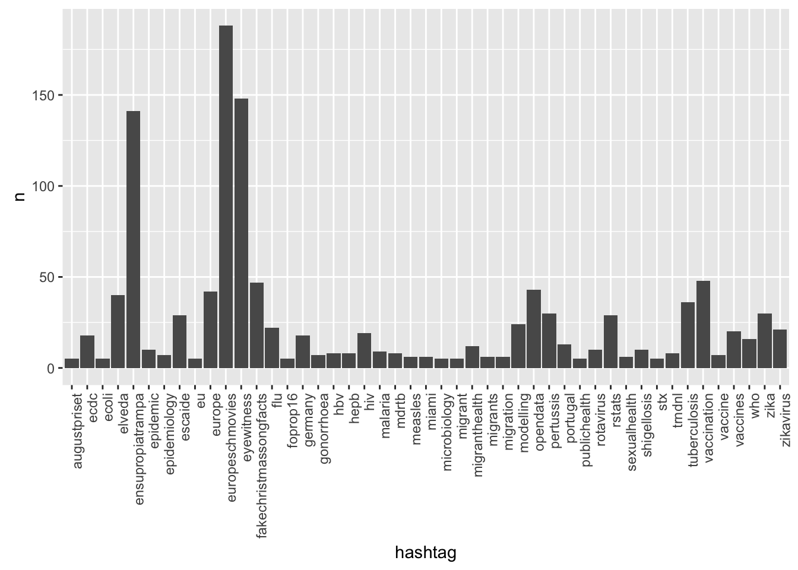
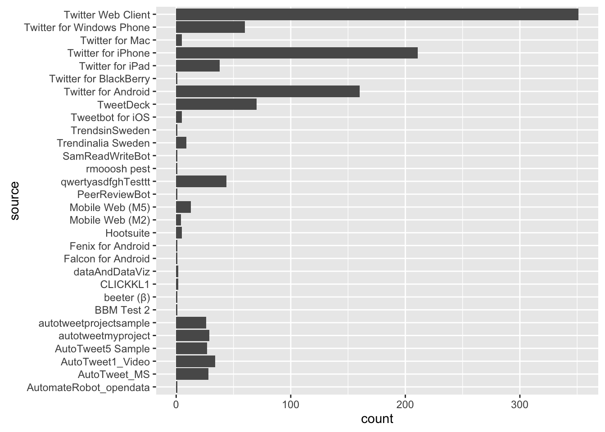
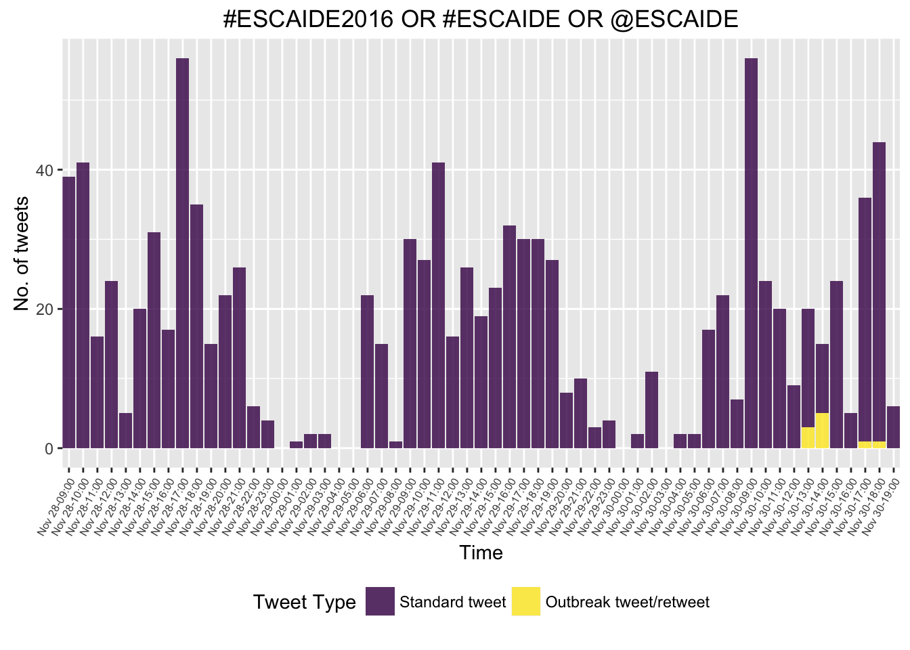
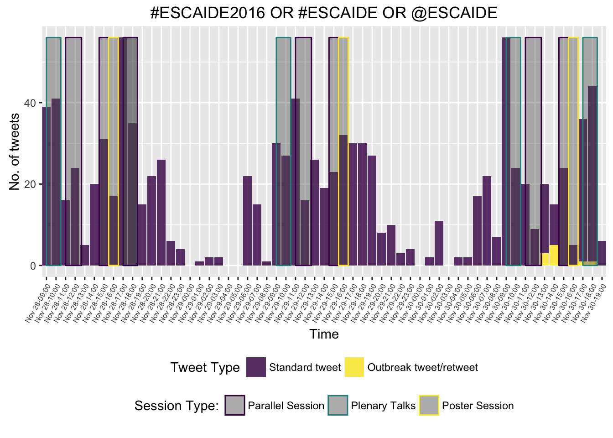

Monitor the Conference Twitter Feed
The Hackathon Team
30 November 2016
This tutorial illustrates how one extracts data from twitter using R in order to quickly establish a tweet based monitoring system for critical event monitoring. We will use the rtweet package to harvest the data using the twitter API and subsequently monitor them with the surveillance package.
Setting up the twitter API
The README.md of the rtweet package provides helpful information on how to create a twitter app to automatically search tweets using the twitter AP
library(rtweet)
library(ggplot2)
library(dplyr)# A file containing the information of your twitter app. To protect the
# information stored here, this is kept outside the public git repository.
#
# The contents of the file are simply:
# twitter_token <- create_token(app = "surveillance_trends", # whatever you named app
# consumer_key = "2zIXXX4L6USa4UfXXXXXXXXXX",
# consumer_secret = "oXXXXXXXSwwXXXXXXXXXXXXXXsXXXXXXXmXXXXXXXX")
source("~/Sandbox/Twitter-Trends/auth-trends.R",encoding="UTF8")Performing Queries
Perform the query, here we shall search for tweets containing the hashtag #ESCAIDE2016. The result is a list of individual tweets – this is almost similar to the well known concept of a linelist:
the_query <- "#ESCAIDE2016 OR #ESCAIDE OR @ESCAIDE"tweets <- search_tweets(the_query, n = 15000, type="recent", token = twitter_token)DT::datatable(head(tweets))A total of 1133 tweets were collected.
Descriptive Analysis
Who’s tweeting? The tweets originate from a total of 256 users. The top 25 users (by their number of tweets) are:
top_tweeters <- tweets %>% group_by(screen_name) %>%
summarise(nTweets=n()) %>%
arrange(desc(nTweets)) %>%
top_n(n=25)
ggplot( top_tweeters, aes(x=screen_name,weight=nTweets)) + geom_bar() + coord_flip() + xlab("Number of tweets")
Distribution of the different hashtags used in the tweets:
df <- data.frame(hashtag=unlist((tweets)$hashtags)) %>%
mutate(hashtag = stringr::str_trim(hashtag), hashtag = tolower(hashtag)) %>%
filter(!hashtag %in% c("escaide2016")) %>%
group_by(hashtag) %>%
summarise(n=n()) %>% filter(!is.na(hashtag)) %>% arrange(-n) %>% top_n(n=40)
ggplot(df, aes(x=hashtag,y=n)) + geom_bar(stat="identity") +
theme(axis.text.x=element_text(angle=90, hjust=1))
Distribution of the system used for the tweeting:
ggplot( tweets, aes(source)) + geom_bar() + coord_flip()
Time series of the tweets (without interruptions):
library(lubridate)
## Make POSIX function for dplyr re-use
make_posix <- . %>% mutate(time=lubridate::ymd_hms(paste0(year,"-",month,"-",day," ",hour,":00:00"),tz="CET"))
##Are tweets a retweet of our tweet?
#the_tweet_id <- tweets %>% filter(screen_name == "m_hoehle") %>% head(n=1) %>% .[["status_id"]] %>% as.character
tweets <- tweets %>% mutate( is_retweet_of_us = (!is.na(retweet_status_id == 803931871662972928) & retweet_status_id == 803931871662972928))
#tweets2 <- tweets %>% mutate_( paste0("is_retweet_of_us = (retweet_status_id == ", the_tweet_id,")"))
## All possible time points
ts <- tweets %>%
mutate(hour = sprintf("%.02d",lubridate::hour(created_at)), day=lubridate::day(created_at),month=lubridate::month(created_at),year=lubridate::year(created_at)) %>%
make_posix %>%
group_by(time, is_retweet_of_us) %>%
summarise(n=n(),n_retweets=sum(is_retweet_of_us,na.rm=TRUE),n_noretweets=n-n_retweets)
allTimes <- expand.grid(year=2016, month=11, day=25:30, hour=sprintf("%.02d",0:23)) %>%
make_posix %>%
arrange(time) %>% mutate(n=0)
ts2 <- allTimes %>% left_join(ts, by="time") %>% group_by(time) %>%
filter(time > "2016-11-28 08:00:00 CET" & (time < "2016-11-30 17:30:00 CET")) %>% select(-n.x,-is_retweet_of_us,-n.y)
na2zero <- function(x) {x[is.na(x)] <- 0 ; return(x)}
ts2 <- ts2 %>% mutate(n_retweets = na2zero(n_retweets),
n_noretweets = na2zero(n_noretweets)) %>%
rename(retweet = n_retweets, no_retweet = n_noretweets)
ts3 <- tidyr::gather(ts2, group, n, retweet:no_retweet)
ts3 <- ts3 %>% mutate(group = factor(group))p <- ggplot(ts3) +
geom_bar(aes(x=time, y=n, fill=group), stat="identity",alpha=.8) +
theme(axis.text.x=element_text(angle=90, hjust=1)) +
ylab("No. of tweets") +
xlab("Time") + ggtitle(the_query) +
scale_x_datetime(date_minor_breaks="1 hour",date_breaks="1 hour",date_labels="Nov %d-%H:00") +
theme(axis.text.x = element_text(angle = 60, size = 6), legend.position = "bottom") +
viridis::scale_fill_viridis(discrete = TRUE, name="Tweet Type", label = c("Standard tweet",
"Outbreak tweet/retweet"))
p
Now we overlay the conference program
conference_program_slots <- tibble::tribble(
~from, ~to, ~slot_type,
"2016-11-28 09:00:00 CET", "2016-11-28 10:30:00 CET", "Plenary Talks",
"2016-11-28 11:00:00 CET", "2016-11-28 12:40:00 CET", "Parallel Session",
"2016-11-28 14:30:00 CET", "2016-11-28 15:30:00 CET", "Parallel Session",
"2016-11-28 15:30:00 CET", "2016-11-28 16:30:00 CET", "Poster Session",
"2016-11-28 17:00:00 CET", "2016-11-28 18:30:00 CET", "Plenary Talks",
"2016-11-29 09:00:00 CET", "2016-11-29 10:30:00 CET", "Plenary Talks",
"2016-11-29 11:00:00 CET", "2016-11-29 12:40:00 CET", "Parallel Session",
"2016-11-29 14:30:00 CET", "2016-11-29 15:30:00 CET", "Parallel Session",
"2016-11-29 15:30:00 CET", "2016-11-29 16:30:00 CET", "Poster Session",
"2016-11-28 17:00:00 CET", "2016-11-28 18:30:00 CET", "Parallel Session",
"2016-11-30 09:00:00 CET", "2016-11-30 10:30:00 CET", "Plenary Talks",
"2016-11-30 11:00:00 CET", "2016-11-30 12:40:00 CET", "Parallel Session",
"2016-11-30 14:30:00 CET", "2016-11-30 15:30:00 CET", "Parallel Session",
"2016-11-30 15:30:00 CET", "2016-11-30 16:30:00 CET", "Poster Session",
"2016-11-30 17:00:00 CET", "2016-11-30 18:30:00 CET", "Plenary Talks"
) %>% mutate(from = as.POSIXct(from), to = as.POSIXct(to))p + geom_rect(data = filter(conference_program_slots, to < "2016-11-30 17:30:00 CET"),
aes(xmin = from, xmax = to, ymin = 0, ymax = max(ts3$n), color = slot_type), alpha = 0.4) +
theme(legend.position = "bottom") +
viridis::scale_color_viridis(discrete = TRUE, name = "Session Type:")
Outbreak detection
We shall use the EARS C method for performing outbreak detection.
library(surveillance)
baseline <- 7
tweet_sts <- surveillance::sts(observed = ts2$retweet + ts2$no_retweet, # weekly number of cases
epoch = as.numeric(ts2$time))
monitored_tweets <- earsC(tweet_sts, control = list(baseline = baseline))
monitored_tweets_df <- as.data.frame(monitored_tweets)
monitored_tweets_df <- mutate(monitored_tweets_df,
time = ts2$time[(baseline + 1):(nrow(ts2))])
ggplot(ts3) +
geom_bar(aes(time, n, fill = group), stat = "identity") +
viridis::scale_fill_viridis(discrete = TRUE, name = "Alarm:") +
geom_step(data = monitored_tweets_df, aes(time, upperbound)) +
theme(legend.position = "bottom") +
theme(axis.text.x=element_text(angle=90, hjust=1)) +
ylab("No. of tweets") +
xlab("Time") + ggtitle(the_query) +
scale_x_datetime(date_minor_breaks="1 hour",date_breaks="1 hour",date_labels="Nov %d-%H:00") +
theme(axis.text.x = element_text(angle = 60, size = 6)) +
geom_point(data = filter(monitored_tweets_df, alarm), aes(x = time), y = 0, color = "red") +
viridis::scale_fill_viridis(discrete = TRUE, name="Tweet Type", label = c("Standard tweet",
"Our outbreak tweet/retweet"))
Instant citizen science experiment
Let’s see, if we can artificially inject an outbreak into the time series. Retweet the post below, if you want to participate in an instant citizen science experiment.
Syndromic surveillance at #escaide2016 ! Let's retweet & create a virtual outbreak 😷 https://t.co/zks5PZOTpM @ma_salmon @dirk_sch #rstats pic.twitter.com/TLzm3oCvDM
— Michael Höhle (@m_hoehle) November 30, 2016
For a not so serious version of the above citizen science experiment, see this blog post on how to detect zombie outbreaks using twitter.